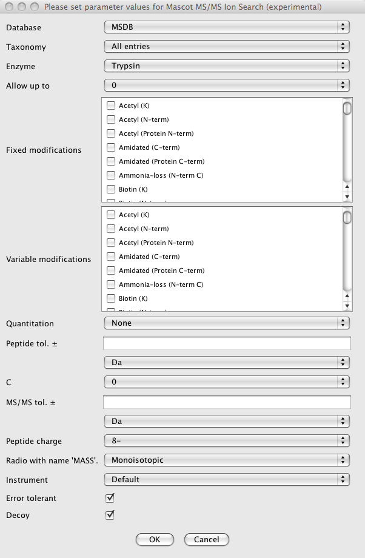

This module allows the identification of chromatographic peaks by Mascot Software (Matrix Science) using their most intense fragment scan (MS2). A mascot generic format file (MGF) is generated from a peaklist and submitted to a previous configured Mascot server.
The list of parameters is build base on the Mascot MS/MS Ion search form page. The list of parameters or options can vary depending of the Mascot version.
